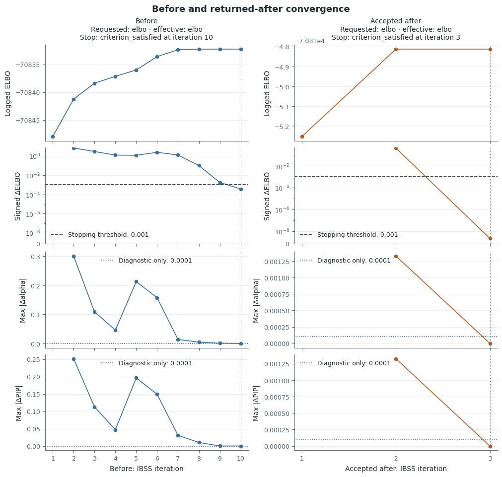
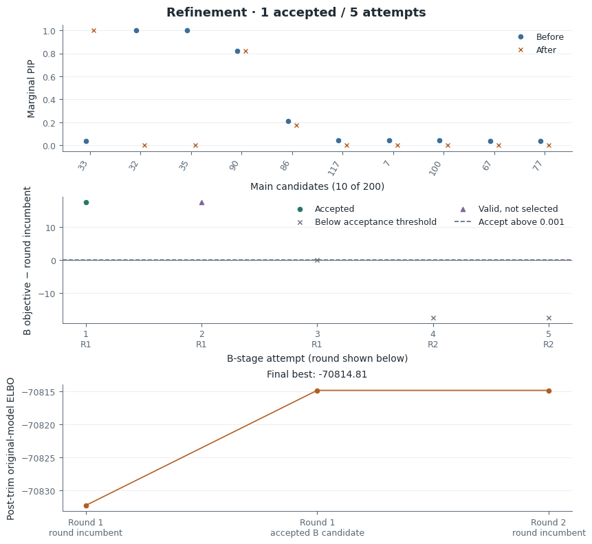
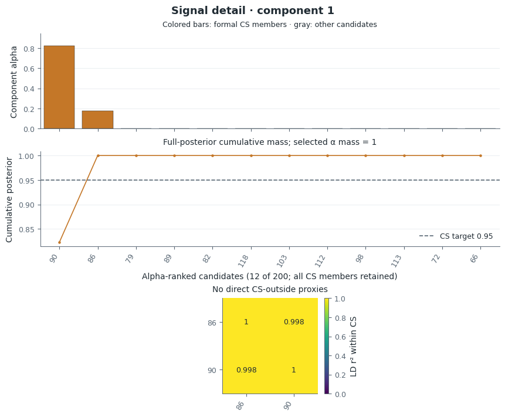
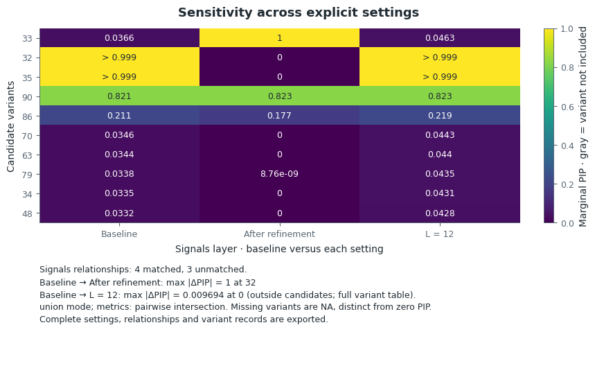

On this page
Two worked fine-mapping examples
These examples show how to read the posterior, stopping evidence and sensitivity together. The stable example has persistent leading credible sets but a prior-sensitive background. The problem example reaches its initial stopping condition, then finds a better solution through refinement.
| Example | Input | Open the saved result |
|---|---|---|
| Stable | Packaged 500-variant synthetic toy data | Offline report, figure index |
| Problem | Official susieR 200-SNP FinemappingConvergence sufficient statistics |
Offline report, figure index |
The stable inputs are independently generated synthetic data; their generation metadata and GPL-3.0-or-later notice ship with the package. The problem fixture uses a simulated response with real-genotype-derived sufficient statistics, without individual genotypes; source metadata records the pinned upstream input and BSD-3-Clause license, with upstream attribution.
The reports reuse recorded fits and diagnostics. Their provenance separates the numerical producer from the current plotting and reporting source; updating the presentation does not create a new numerical result. Values below are rounded for reading. The linked JSON and CSV retain full precision, identifiers and comparison support. Neither example supplies a biological mechanism or gene annotation to infer.
Stable signals with a prior-sensitive background
The baseline stops after three sweeps with the requested and effective ELBO rule,
at tolerance 0.001. It has two active components and two singleton CS,
{syn0100} and {syn0350}. Their posterior masses are approximately 0.9697 and
0.99994, and their effective candidate counts are 1.146 and 1.001. Singleton
purity is 1 by definition; it does not describe LD to surrounding variants.
Refinement tests two exclusions in one round, using four inner fits. Neither stage-B candidate improves the common objective by more than 0.001, so no candidate is accepted. Before and after have the same post-trim original-model objective, approximately −1363.854754, and identical PIPs. This supports stability under the executed search, without establishing global optimality.

| Variant | Baseline PIP | Fixed scaled prior variance 0.05 |
|---|---|---|
| syn0350 | 0.99994 | 0.99995 |
| syn0100 | 0.9697 | 0.9777 |
| syn0101 | 0.03028 | 0.02701 |
| syn0143 | 5.318×10⁻¹¹ | 0.2544 |
| syn0145 | 2.066×10⁻¹¹ | 0.1430 |
Increasing L from 5 to 6 leaves all PIPs unchanged. Changing reported CS coverage
from 0.95 to 0.90 also leaves them unchanged, because that operation reuses the
posterior. Fixing scaled_prior_variance=0.05 with
estimate_prior_variance=False preserves both leading CS but changes the
background substantially.
The component table explains why these are distinct observations. The estimated
baseline retains two active components; the fixed positive-variance setting
retains all five, three without retained CS. Disabling estimation removes the
step that could shrink unused component V to zero, so those extra components
remain available to distribute probability. The rise at syn0143 and syn0145
is evidence of sensitivity to this model choice, not proof of additional causal
signals. The parameter is scaled prior variance; working-scale V also depends
on the response variance.
All 500 variants are present in every setting. The LD diagnostic assesses all 500 and flags none, with no conditional-only or unassessed rows. That recorded result does not remove the prior sensitivity above.
Read the full comparison, component and CS summary and LD records for the values underlying these statements.
A stopped fit improved by refinement
The 200-variant baseline satisfies its ELBO stopping rule after ten sweeps. That is evidence about one trajectory. Refinement evaluates five exclusion attempts in two rounds, using ten inner fits, and accepts one candidate. The returned candidate satisfies its inner stopping rule after three sweeps.

The comparable post-trim original-model objective changes from −70832.271605 to −70814.813295, a gain of 17.4583. The final logged sweep ELBO has a slightly different value and is not substituted in this comparison. Different starting solutions have different outcomes even though both satisfy their inner stopping rules.

| Variant | Initial PIP | Refined PIP | L = 12 PIP |
|---|---|---|---|
| 32 | >0.9999 | 0 | >0.9999 |
| 33 | 0.03660 | 1 | 0.04627 |
| 35 | >0.9999 | 0 | >0.9999 |
| 86 | 0.2114 | 0.1772 | 0.2192 |
| 90 | 0.8214 | 0.8228 | 0.8232 |
The initial singleton CS {35} and {32} are replaced by {33}; the {86,90}
CS remains. The stored refined PIPs at 32 and 35 are zero, and the stored value
at 33 is one. These are observed numerical values, not missing variants; bounds
mark initial probabilities that are close to, but below, one. The change in
singleton support is substantial, rather than a redistribution within one
unchanged CS.
What remains unresolved
The refined {86,90} CS has mass greater than 0.9999, approximately 1.595 effective
candidates, and |r| = 0.9989. Its roughly 0.177/0.823 probability allocation leaves
LD-limited resolution. The report shows this pair separately from the concentrated
singleton {33}.

Variant 33 has genotype correlation about 0.532 with 90. That correlation is not a test of whether the two modeled effects are conditionally distinguishable. Neither the retained pair nor the number of CS determines the true number of causal effects. The result supports two distinct posterior summaries: a concentrated candidate at 33 and unresolved allocation within 86/90.
Sensitivity beyond the displayed candidates

L = 12 retains the initial three CS. Its largest PIP change over the full
200-variant support occurs at variant 0, outside the main candidate view:
0.03856 → 0.04825, an absolute change of 0.009694. The complete table and summary
retain this change. Nine active components without retained CS contribute to
the L = 12 background; their broad overlaps are kept in the component evidence
without treating them as identified signal splits or merges.
All 200 variants are observed in every setting. All 200 receive a completed LD
assessment, with none flagged. Variant 33 has the largest absolute conditional
residual (about 3.872) but log LR about −90.95. Variant 0 has log LR about 3.560,
but |adjusted z| about 0.644. Neither satisfies the joint rule
log LR > 2 and |adjusted z| > 2. A residual label is therefore not an allele-flip
claim. The LD matrix is close to singular; use the saved diagnostic warnings and
input identity when assessing this result.
Read the full comparison, posterior and search summary and LD diagnostics. Exact paired R flip-flag agreement was not established for either full example; the separate small-fixture numerical checks do not supply that missing comparison.
Reproduce or customize the figures
To regenerate presentation from the saved fits and diagnostics, use the source
revision recorded as render_source_sha in either report's provenance.json.
Set RENDER_SOURCE_SHA to that full 40-character revision:
python examples/render_review.py --output-dir output/rendered-examples \
--sensitivity-dir docs/review/post_analysis_fixes/examples \
--render-source-sha "$RENDER_SOURCE_SHA"
This command reuses saved baseline, refined and alternative fits and LD records;
it recomputes posterior summaries, comparisons and presentation without new fits.
The original fit producer is e45914e512e04feef37cf7310bc0b309582d6058 and the
three additional sensitivity fits were produced at
1f2b246ebd7970929711b2a51bb08f6a76ddad56. Per-case provenance records the exact
inputs and saved source files.
To fit both examples anew from the source checkout with the analysis extra installed:
PRUSIE_SER_MATH=scalar python examples/post_analysis.py --output-dir output/post-analysis --case both
This explicit command runs fits and diagnostics, using the scalar SER math setting recorded for the saved numerical examples. Opening the saved reports above does not. Each report includes PNG/SVG, complete CSV tables, lossless JSON/NPZ, provenance and a figure index. The compact main figures are supplemented by a separate variance-details figure and full search tables.
Select a component according to the question it answers. For the problem result, the two retained CS justify distinct detail views:
from prusie.plots import plot_signal
singleton = plot_signal(summary, variant_id="33", R=R,
layout="compact", ld_measure="r2")
pair = plot_signal(summary, variant_id="90", R=R,
layout="compact", ld_measure="r2")
Here summary and R are the problem result and aligned LD matrix. IDs in this
example identify its saved variants; use your own CS members or component IDs
for another fit. See the API for local style,
full layouts and exported plotting data, and the
sensitivity guide for variant alignment and prior policies.
The interpretations on this page were prepared in the current Codex session for human scientific review by reading the saved results. They are separate from the optional AI adapter and do not demonstrate a provider/API invocation.